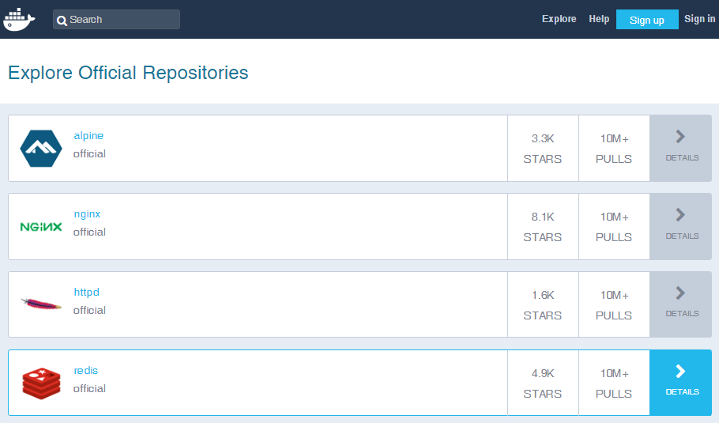
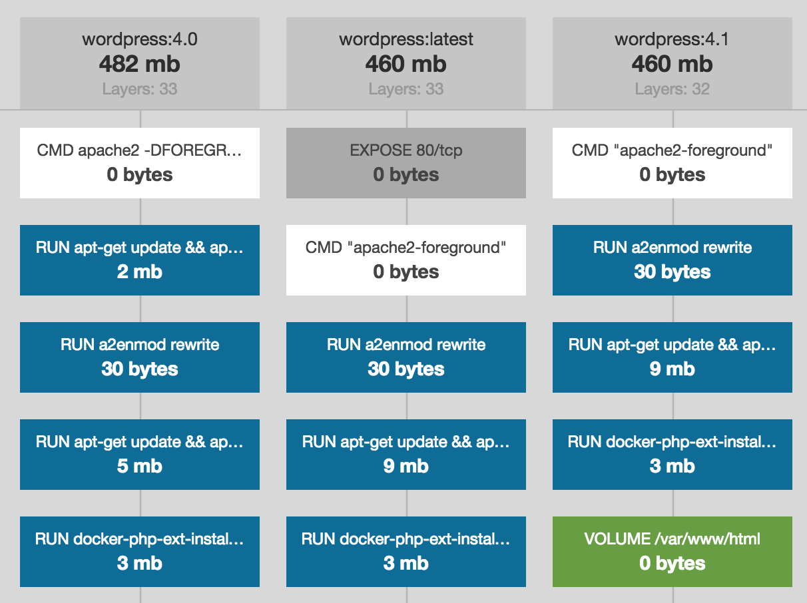

Serverside Development [JLW506]
02.Virtualization with Docker
Introduction: virtualization
The problem (1)
But it worked on my machine
- When …
- developing in a team
- publishing your project on a production server
- handing over your project to …
- a customer
- your lecturer ;-)
- …
The problem (2)
- Where does it go wrong?
- PHP version & config
- (Backward incompatible) changes including default behaviour of functions
php.ini- Composer: need to update or requirements infeasible
- Available PHP extensions, versions & config
- DBMS brand, version & config
- Your database (schema)
- Unless it is handled by a dev tool (e.g. Laravel Database Migrations)
- Webserver brand, version & config (Apache:
httpd.conf)
- PHP version & config
What if …
- We would deliver a virtual machine (VM) with each project?
- It will overcome these problems, but …
- it requires time and expertise
- it requires organization when managing multiple projects
- it can cause problems (size? updates?) when put to version control (Git)
- the relation between the VM and the project files might be unclear: where to copy, where to develop, how to run?
- It will overcome these problems, but …
The solution (1)
- Virtual environments (software)
- How does it work?
- description (typically some text files) of server environment, which is easy to share (portable)
- description generates everywhere exactly the same environment (reproducable)
- hopefully, it takes few time and few resources (lightweight)
- How does it work?
The solution (2)
- Virtual environments (software)
- Vagrant = higher-level wrapper around virtualization software such as VirtualBox and VMware
- Want to learn more? former slides
- Docker = operating-system-level virtualization on Linux
- works with isolated features of Linux kernel
- very lightweight and popular
- → We will continue with Docker
- Vagrant = higher-level wrapper around virtualization software such as VirtualBox and VMware
Docker basics
Architecture

A (public) registry like Docker Hub stores Docker images anyone can use. These images can be copied to your system.
Images are blueprints (= read-only templates) of Docker containers. Containers are runnable isolated instances you can create, start, stop, … on the central Linux kernel.
With a Dockerfile you can create your own image.
Docker comes with a client-server architecture on you system, where the central server component listening for commands is called the Docker daemon.
Installing and running Docker
-
Docker CE - stable release - instructions:
- Docker for Windows
- Docker for Mac
- Docker on Ubuntu
- If you have Windows Home Edition, please read these instructions for Docker Toolbox
Linux containers
-
Docker for Windows has multiple modes: Windows containers and Linux containers
- For the sake of compatibility → always use Linux containers
- Yes, Docker's running a VM on Windows (Hyperkit VM on Mac)

Docker Hub (1)
- Docker Hub is Docker's browsable registry of images
- Image versions (indicated by tags) are grouped into repositories

Docker Hub (2)
-
Let's explore …
- Explore: repositories ordered by # pulls
- Official repositories are curated by a dedicated team → use them !
- OSs like Alpine Linux
- Dev components like nginx*, PHP* and MySQL*
- Some images's configuration can be changed by overruling environment variables
- Any user can publish images in public repositories either by
docker pushor by automated builds (git hook)- Example: richarvey/nginx-php-fpm
Let's run a container
$ docker run -e MYSQL_ROOT_PASSWORD=Azerty123 -d mysql:5.7-
This command actually performs the following steps:
-
No mysql:5.7 image present?
$ docker pull mysql:5.7 -
Create a new container:
$ docker create -e MYSQL_ROOT_PASSWORD=Azerty123 mysql:5.7→ the daemon returns a container ID:950968d78d63ae451c178a46799cd85b6aed5d9692d46a6b3acca05da8830990- allocates a read-write filesystem to the container
- connects the container to the default network (unless specified otherwise)
-
Start the container (in background mode):
$ docker start 950→ you see? a unique ID prefix is enough
-
No mysql:5.7 image present?
Let's see what happened
$ docker images
REPOSITORY TAG IMAGE ID CREATED SIZE
mysql 5.7 5d4d51c57ea8 2 weeks ago 374MB
mysql latest f0f3956a9dd8 3 weeks ago 409MB
nimmis/apache-php7 latest 93b52d88eb58 6 weeks ago 482MB
alexcheng/magento2 latest 41b274b16771 7 weeks ago 1.43GB
phpmyadmin/phpmyadmin latest 19c3875df23d 2 months ago 104MB
mysql 5.6.23 0bd9ef0792fa 2 years ago 283MB
$ docker ps
CONTAINER ID IMAGE COMMAND CREATED STATUS PORTS NAMES
950968d78d63 mysql:5.7 "docker-entrypoint.s…" 20 minutes ago Up 8 minutes 3306/tcp confident_hermann
$ docker ps -a
CONTAINER ID IMAGE COMMAND CREATED STATUS PORTS NAMES
950968d78d63 mysql:5.7 "docker-entrypoint.s…" 20 minutes ago Up 8 minutes 3306/tcp confident_hermann
4f909c0d46e1 nimmis/apache-php7 "/my_init" 2 weeks ago Exited (0) 2 weeks ago youthful_rosalind
ec1702dd0e85 alexcheng/magento2 "/sbin/my_init" 5 weeks ago Exited (0) 5 weeks ago gallant_villani
c5d0d1270551 alexcheng/magento2 "/sbin/my_init" 5 weeks ago Exited (0) 5 weeks ago agitated_kowalevski-
Actually we have been using a lot of shorthand commands:
docker image pull→docker pulldocker image ls→docker imagesdocker container create→docker createdocker container ls→docker ps
Play and rewind
-
container *shorthands-
$ docker start [C](re)starts the container -
$ docker pause [C]pauses the container -
$ docker unpause [C]starts a paused container -
$ docker stop [C]stops the container (at first gracefully) -
$ docker kill [C]stops the container immediately -
$ docker rm [C]removes the container from your system - Replace
[C]by the container id (unique prefix) or container name (might be assigned randomly)
-
docker run (1)
-
This command is typically used with 2 kinds of flavour:
-
Foreground mode e.g.
$ docker run -it mysql:5.7 bash- when
-dis not specified, Docker attache STDIN, STDOUT and STDERR to the current console - after the image (
mysql:5.7) a command (bash) to be executed inside the container can be specified - when it concerns an interactive command, you must use
-iand-tin orde to attach a pseudo-TTY - when you exit the tty, the container is stopped
- when
-
Detached mode e.g.
$ docker run -d mysql:5.7- You can still run a command and attach by
docker exec -it 950 bash
- You can still run a command and attach by
-
Foreground mode e.g.
docker run (2)
-
Some options
-
--name test: assign a name to the container -
-w /working/directory: specify the path where the command must executed -
-v /Users/franky/Documents/configmap:/etc/mysql/conf.d: mounts a host folder into the container -
--expose 80: you document which ports are intended for public usage -
-p 3307:3306: binds port 3307 of the host machine to port 3306 of the container -
-P: binds all exposed ports to random ports of the container (detect withdocker port) -
-e MYSQL_ROOT_PASSWORD=my-secret-pw: set environment variables - and many others
-
docker run (3)
-
A better example
$ docker run -it -p 8080:80 --name demo-app -v /volledig/pad/myfolder:/var/www/html php:7.2-apache
Creating your own images
-
How does it work?
-
A Dockerfile is a text file containing a list of commands to build an image
FROM mysql:8.0 MAINTAINER Mahmoud Zalt <mahmoud@zalt.me> # Set timezone ARG TZ=UTC ENV TZ ${TZ} RUN ln -snf /usr/share/zoneinfo/$TZ /etc/localtime && echo $TZ > /etc/timezone COPY my.cnf /etc/mysql/conf.d/my.cnf CMD ["mysqld"] EXPOSE 3306 - Some instructions add to, others override the instructions of the parent image
-
Dockerfile → installation;
docker runoptions → running on your system -
Create the image locally by:
docker build -t mjoris/mysql-tz:1.0 .
→ the image is built layer by layer - Publish your image on Docker Hub with
docker push(firstdocker login) or use automated builds with GitHub
-
A Dockerfile is a text file containing a list of commands to build an image
Image layers?
-
An image is stored in layers on your system
- Image layers are intermediate images stored as a diff on the previous layer
- Almost each command in a Dockerfile generates a new layer
-
Inspect an image's layers with
docker history - Layers are cached by Docker

Dockerfile pitfalls
-
Before you code your own Dockerfile, read the docs, look at examples and read about the do's and the don'ts (1, 2)
- Most important rule: keep your container reproducible (in the future)
- So don't deploy your application in a running container (!)
-
So never rely on the latest tag (which is the default):
FROM mysql:8.0 -
RUNis executed when the image is built;CMDeach time a container is started -
With APT in your
RUN: alwaysapt-get update; neverapt-get upgrade -
Avoid URLs and IP addresses in your
RUNconfig -
Reduce the number of layers: pack multiple
RUNcommands into 1 command with&& \ -
You can
COPY/ADDyour configuration files (at build time) into the image; be aware thatADDhas side-effects -
Never
COPY/ADDyour project code into the image; mount a directory withVOLUMEfor that
Separation of concerns
- Let's take a look at the following example
-
This is not how Docker is typically used #vagrantstyle
- One task per container
- → multi-container environments
Docker compose
Multi-container environment (MCE)
-
There's a lot to tell about creating containers and making them work together manually
- By default, containers share the default bridge network - so we'll need to create a separate
docker network - You'll need to match ports, passwords, env variables and other settings manually
- Precaution if you have multiple MCEs, if you need to change a container, etc.
- By default, containers share the default bridge network - so we'll need to create a separate
-
Fortunately, Docker Compose exists
- CLI tool for running multi-container Docker apps in an easy way
- included in Docker for Mac & Windows
How does it work?
-
Define your multi-container app in a file called
docker-compose.yml- The
services:section lists the images from which the containers will be built - Services starting with
build:will use an image from theDockerfilein the specified directory - Services starting with
image:refer to images to be pulled from Docker Hub
- The
-
Build and start your app by running
docker-compose up(add-dfor detached mode)- A Docker network is created when missing (network names = service names)
- Images/container are created when missing; containers are replaced when changed
-
Stop your app:
^C(ordocker-compose stopin detached mode) -
Remove the containers and associated volumes:
docker-compose down --volumes
A simple example
php/Dockerfile
FROM php:5.6-apache
RUN docker-php-ext-install pdo_mysqldocker-compose.yml
version: '2'
services:
php:
build: php
ports:
- "8080:80"
- "44344:443"
volumes:
- ./www:/var/www
links:
- db
db:
image: mysql:5.7
volumes:
- /var/lib/mysql
environment:
- MYSQL_ROOT_PASSWORD=Azerty123
- MYSQL_DATABASE=moviedb→ files (+ demo php) available in assets/02/examples/2-docker-compose-simple
Learn more
-
Check out the Docker Compose file reference
- Remember the Dockerfile pitfalls!
-
Learn by example
-
nanoninja's docker-nginx-php-mysql on GitHub (Dockerfile)
- 5 different base OS's running on the kernel, incl. phpmyadmin and composer
- nginx needs server like php-fpm for PHP code processing
- (-) no fixed mysql version;
- (-) PHP version of composer may differ from PHP web version (!)
- PHPDocker.io generates very similar MCEs
-
Laradock: an extremely flexible PHP development environment for Docker
- choose from almost 40 containers
- extremely well designed at the inside (Dockerfile)
- the
workspacecontainer is where you run any of your CLI commands (e.g. composer)
-
nanoninja's docker-nginx-php-mysql on GitHub (Dockerfile)